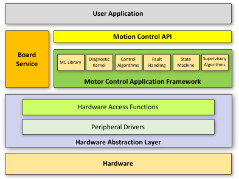
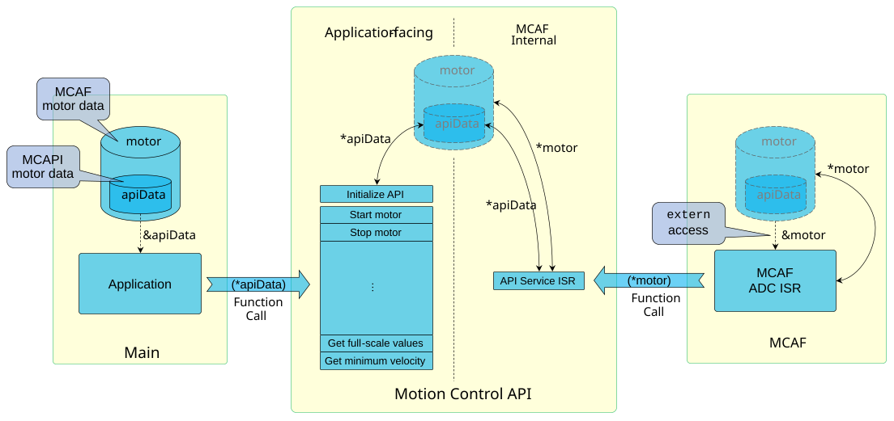

4.10. 运动控制 API（MCAPI）¶
MCAPI 提供了一组高级接口，应用程序可使用这些接口来控制电机并从中获取反馈信息，而无需了解 MCAF 及其内部工作原理。

图 4.18 显示 MCAPI 与 MCAF 和应用程序关系的框图¶
4.10.1. 概述¶
MCAPI 为应用程序提供以下接口：
与 MCAF 交互的公共函数——定义在
mcapi.henum和structtypedef 以配合这些 MCAPI 函数使用——定义在mcapi_types.h
所有 MCAPI 函数的设计目标如下：
最小化 CPU 执行时间
非阻塞实现
不需要以任何特定速率调用，且不需要任何时序参考
不需要访问任何设备外设
4.10.2. API 描述¶
所有 MCAPI 函数定义在 mcapi.h 中还包含带相关信息的文档注释。下表显示了这些函数的列表及其简要描述。
顶层 API 功能 |
API 描述 |
|---|---|
启动电机 |
启动指定的电机。如果电机已在运行，则不会发生变化。如果存在活动的 MCAF 故障，此函数将无效。 |
停止电机 |
停止指定的电机。如果电机已处于故障、停止或正在停止状态，则不会发生变化。 |
设置速度参考 |
使用指定值更新电机的速度参考。输入值为有符号 Q15 数，具有与 MCAF 中使用的速度相同的缩放因子。输入值的符号决定旋转方向。 当电机不在 在初始化后首次调用此函数之前，速度参考的设定值为零，或等于对 MCAF 有效的速度参考最小值。 注意：
|
获取速度参考 |
返回电机速度参考的有符号 Q15 值。返回值将与“设置速度”函数设定的值完全匹配，并具有与 MCAF 中使用的速度相同的缩放因子。返回值的符号决定旋转方向。 在初始化后首次调用“设置速度”函数之前，速度参考的返回值为零，或等于对 MCAF 有效的速度参考最小值。 |
获取电机速度 |
返回由 MCAF 中估算器测量的电机速度的有符号 Q15 值。返回值具有与 MCAF 中使用的速度相同的缩放因子。返回值的符号决定旋转方向。 |
获取电流幅值 |
返回表示电机电流幅值的有符号 Q15 值。返回值按与 MCAF 中使用的满量程电流相同的缩放因子进行缩放。 由于此值来自经过低通滤波的信号，因此不是瞬时值，与电机中的实际电流相比会有一些延迟。此情况下使用的滤波器时间常数可以在 |
获取故障状态 |
返回一个 |
清除故障状态 |
清除指定的故障标志或给定的一组故障标志。此函数在清除所有待处理故障后不会隐式启动电机。 |
获取电机状态 |
返回 |
获取电流 Iq |
返回表示电机 q 轴电流的有符号 Q15 值。此返回值按与 MCAF 中使用的满量程电流相同的缩放因子进行缩放。 由于此值来自经过低通滤波的信号，因此不是瞬时值，与电机中的实际电流相比会有一些延迟。此情况下使用的滤波器时间常数可以在 |
获取 |
返回 MCAF 正在使用的电流满量程值的浮点格式。 |
获取 |
返回 MCAF 正在使用的电压满量程值的浮点格式。 |
获取 |
返回与 MCAF 一起使用的给定硬件系统的电磁转矩满量程值的浮点格式。 磁阻转矩、铁芯饱和以及温度导致的磁通变化等因素会影响此缩放因子的准确性。因此，应用程序应仅以“仅供参考”的方式使用此值。 |
获取 |
返回 MCAF 正在使用的速度满量程值的浮点格式。 |
ADC ISR 前函数 |
这是 ADC ISR 前函数的占位实现，将在 MCAF 使用的 ADC ISR 开始时被调用。 此接口旨在支持检查中断周期性并执行某些测试用例的功能安全需求。 |
ADC ISR 后函数 |
这是 ADC ISR 后函数的占位实现，将在 MCAF 使用的 ADC ISR 结束时被调用。 此接口旨在支持检查中断周期性并执行某些测试用例的功能安全需求。 |
获取直流母线电压 |
返回表示系统中直流母线电压的有符号 Q15 值。此返回值按与 MCAF 中使用的满量程电压相同的缩放因子进行缩放。 |
获取电流饱和上限 |
返回表示 MCAF 中实现的电流饱和上限的有符号 Q15 值。 |
获取电流饱和下限 |
返回表示 MCAF 中实现的电流饱和下限的有符号 Q15 值。 |
获取速度参考最大值 |
获取给定 MCAF 配置中当前支持的速度参考最大命令值。 |
获取速度参考最小值 |
获取给定 MCAF 配置中当前支持的速度参考最小命令值。 |
设置应用级故障代码 |
允许应用程序设置影响电机驱动的应用级故障代码。应用程序负责设置以下故障代码：
|
获取应用级故障代码 |
获取由应用程序设置的故障代码。 |
该 MCAPI_FAULT_FLAGS enum 定义了由 MCAPI_ApplicationFaultCodeGet()返回的位域中可能的故障标志。下表显示了这些故障标志的列表及简要描述。
MCAPI 故障标志 |
故障描述 |
|---|---|
|
发生了过流故障。 |
|
发生了欠压故障。 |
|
发生了过压故障。 |
|
发生了过温故障。这可能是在逆变器功率级或电机中。 |
|
发生了栅极驱动器故障。 |
|
发生了未指定的故障。此故障标志封装了上述故障标志未涵盖的所有错误。参见 错误代码 获取可能的错误完整列表。 |
4.10.3. 使用说明¶
本指南适用于通过 MCAPI 函数访问 MCAF 的应用程序开发者。
不要使用定义在
mcapi_internal.h。不要使用类型
MCAPI_MOTOR_DATA或MCAPI_FEEDBACK_SIGNALS或访问其内容。设备启动后，调用
MCAPI_Initialize()一次，然后再从应用程序调用任何 MCAPI 函数。所有 MCAPI 函数有一定的延迟限制。setter 函数或命令函数的延迟是指 MCAPI 函数调用开始到相应 MCAF 控制变量被设置之间的时间延迟（注意，由于主线程和 ISR 之间的交互，此更改可能在 MCAPI 函数调用完成后一段时间才生效）。getter 函数或反馈函数的延迟是指 MCAF ISR 从其内部状态采样值的时刻到 MCAPI 作为 MCAPI 函数调用结果返回该值的时刻之间的时间延迟。
尽管有此延迟限制，在调用对应的
get函数后立即调用set函数将立即返回设定值。在这种情况下，get函数的返回值代表请求，不一定是电机的实际状态。的延迟限制 MCAPI 函数在 MCAF R6、R7 中没有界限。但是，getter 和 setter 函数的延迟通常在 2 个 ISR 周期内。
连续快速调用一个或多个 MCAPI 函数（例如间隔小于 1 ms）可能导致延迟增加。类似地，在 MCAPI 函数中调用
while()循环中无延迟地调用 MCAPI 会导致其与 MCAF 失去同步。
参见 主应用程序 了解 MCAF 附带的示例应用程序的描述。
4.10.4. 实现说明¶
MCAPI 在 MCAF R6 中引入，为主应用程序提供一组 MCAF 的高级接口。
4.10.4.1. MCAF R7¶
以下函数在 MCAF R7 中引入：
设置应用级故障代码
获取应用级故障代码
4.10.4.2. MCAPI 架构¶

图 4.19 显示 MCAPI 实现架构的框图¶
MCAPI 在 MCAPI 电机数据中使用单数据缓冲区方法，以便在与 ADC ISR 异步的应用程序和从 ADC ISR 执行的 MCAF 例程之间可靠通信。
在 MCAPI 面向应用程序的一侧：应用程序调用的所有 MCAPI 函数都向 MCAPI 电机数据写入和读取。
在 MCAPI 面向 MCAF 的一侧：从 ADC ISR 调用的 API 服务例程将 MCAPI 电机数据与 MCAF 电机数据中的控制变量同步。
4.10.4.2.1. MCAPI 数据访问¶
MCAPI 电机数据，由类型 MCAPI_MOTOR_DATA定义，分配在类型为 MCAF_MOTOR_DATA。
MCAF ADC ISR 通过 MCAPI 内部函数 MCAF_ApiServiceIsr()从 isr.c。
应用程序应使用公共 MCAPI 函数之一通过指针 &motor.apiData间接访问 MCAPI 电机数据结构。这应被视为不透明数据结构，应用程序不应直接访问其内容。
MCAF_MOTOR_DATA motor； int main（void） { MCAPI_Initialize（&motor。apiData); ... MCAPI_MOTOR_STATE motorState = MCAPI_OperatingStatusGet（&motor。apiData); switch （motorState） { case MCAPI_MOTOR_STOPPED： # 执行某些操作 ... } ... return 1； }
4.10.4.2.2. 处理并发¶
应用程序可以以任意速率执行，对 MCAPI 的调用与 ADC ISR 异步。在 MCAPI 函数调用和 ADC ISR 中都使用的共享 MCAPI 电机数据必须受到保护，以防止未同步的并发内存访问，即所谓的 数据竞争。
例如，以下事件序列可能发生在 MCAPI 函数 MCAPI_FaultStatusClear()中，该函数在 motor.apiData.faultClearFlags 中设置一系列位标志以请求清除故障：
应用程序调用
MCAPI_FaultStatusClear(&motor.apiData, 2)MCAPI_FaultStatusClear()从faultClearFlags在 MCAPI 电机数据中读取预先存在的值 8（位 3 已设置）MCAPI_FaultStatusClear()被 ADC ISR 中断，且MCAF_ApiServiceIsr()清除位 3，写入faultClearFlags为 0MCAPI_FaultStatusClear()从 8 OR 2 计算出值 10MCAPI_FaultStatusClear()将值 10 写入faultClearFlags
在这种情况下，ADC ISR 所做的写入丢失了。
为防止数据竞争，MCAPI 函数使用 apiBusy 标志来声明对 MCAPI 电机数据结构的所有权，同时执行代码的关键部分。API 服务例程设计为在看到 apiBusy 标志已设置时跳过执行。
4.10.4.3. MCAPI 勘误¶
MCAPI 不会单独清除
MCAPI_FAULT_FLAG_OVERCURRENT故障或MCAPI_FAULT_FLAG_MOTOR_DRIVE故障，如果存在其他活动故障。（DB_MC-3012；适用性：MCAF R6、R7；在 MCAF R8 中修复。）例如，如果在给定时刻有三个活动故障：
MCAPI_FAULT_FLAG_OVERCURRENT故障MCAPI_FAULT_FLAG_MOTOR_DRIVE故障MCAPI_FAULT_FLAG_OVERVOLTAGE故障
那么在这种情况下，以下代码片段不会清除
MCAPI_FAULT_FLAG_OVERCURRENT故障或MCAPI_FAULT_FLAG_MOTOR_DRIVEfault.void APP_ApplicationStep（volatile MCAPI_MOTOR_DATA *api） { ... MCAPI_FaultStatusClear（api， MCAPI_FAULT_FLAG_OVERCURRENT); ... MCAPI_FaultStatusClear（api， MCAPI_FAULT_FLAG_MOTOR_DRIVE); ... }
应用程序可以通过一次性清除所有故障来规避此问题，如下面的代码片段所示。
void APP_ApplicationStep（volatile MCAPI_MOTOR_DATA *api） { ... uint16_t faultFlags = MCAPI_FaultStatusGet（api); MCAPI_FaultStatusClear（api， faultFlags); ... }
在某些极端情况下，MCAPI 可能会丢失来自 MCAF 的故障事件。 （DB_MC-2978；适用性：MCAF R6、R7；在 MCAF R8 中修复。）
如果以下两个事件在同一个 ADC 中断中发生，则可能出现此问题：
MCAPI 清除特定故障条件。
MCAF 引发同一故障条件的另一个实例。
在现有 MCAPI的实现中，应用程序没有此问题的规避方法。
4.10.4.4. 模块¶
模块 |
文件 |
描述 |
说明 |
|---|---|---|---|
mcapi |
mcapi.cmcapi.hmcapi_types.hparameters/mcapi_params.h |
MCAPI 源码 |
|
mcapi_internal |
mcapi_internal.h |
MCAF 内部的 MCAPI 例程 |